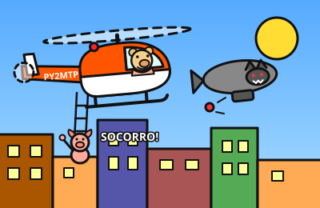
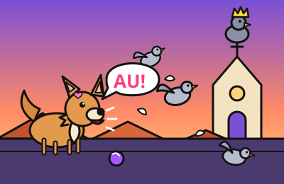

novo!

Milton ao Resgate
Jogo de helicóptero 3D no estilo do Air Rescue do Master System: o porquinho Milton pilota o PY2MTP, resgata porquinhos pela cidade e desvia da gangue do Lobo.
Projetos que fiz com IA, por diversão e sem compromisso. Funcionam na maior parte do tempo.
novo!

Jogo de helicóptero 3D no estilo do Air Rescue do Master System: o porquinho Milton pilota o PY2MTP, resgata porquinhos pela cidade e desvia da gangue do Lobo.
au!

Jogo de plataforma 3D: a chihuahua Luma espanta pombos da praça aos telhados, ganha pulo duplo, Super Bafo e enfrenta o Pombo-Rei.